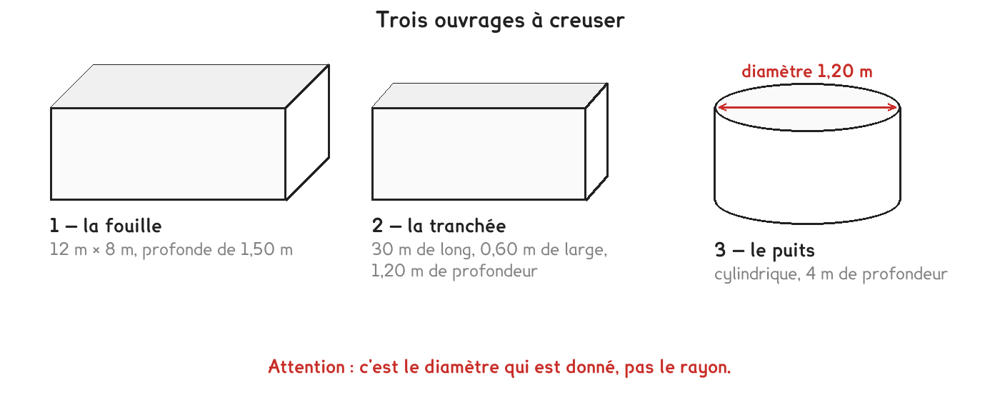

CAP · défi de dépassement · niveau 2
486 m³ à évacuer, des bennes de 14 m³, et une journée de sept heures. Quatre arrondis en cascade, et un camion plus lent qui gagne à la fin.
4 questions · 7 exercices · 1 repli · 1 figure
Savoirs travaillés

Deux arrondis dans le même problème, et ils ne vont pas dans le même sens. Les voyages à faire s’arrondissent au-dessus — il en faut assez ; les rotations tenues dans une journée s’arrondissent au-dessous — la journée ne s’allonge pas.
La terre extraite occupe plus de place que dans le sol : elle gonfle. Un foisonnement de 25 % signifie que 100 m³ en place deviennent 125 m³ une fois dans la benne.
| En place | Le calcul | Foisonné |
|---|---|---|
| 100 m³ | × 1,25 | 125 m³ |
| 40 m³ | × 1,25 | 50 m³ |
| 150 m³ foisonnés | ÷ 1,25 | 120 m³ en place |
| 96 m³ foisonnés | ÷ 1,20 | 80 m³ en place |
On revient du foisonné à l’en place en retirant 25 %. 125 m³ moins 25 % font 93,75 m³, et non 100. Il faut diviser par 1,25, pas soustraire — le même piège qu’au défi 1, avec de la terre à la place des euros.
Pour aller plus loin
Les trois ouvrages du schéma se calculent différemment, et le troisième piège tout le monde.
La fouille et la tranchée sont des pavés droits : longueur × largeur × profondeur.
Le puits est un cylindre, et son énoncé donne un diamètre de 1,20 m — donc un rayon de 0,60 m. Prendre 1,20 pour rayon multiplie le volume par quatre. C’est le même piège qu’à la fiche 12, et il ne s’use pas.
On creuse une fouille de 18 m sur 12 m, profonde de 1,80 m. La terre a un foisonnement de 25 %. Les camions ont une benne de 14 m³, une rotation dure 45 minutes, la journée compte 7 heures, et deux camions travaillent en alternance.
Exercice · GE
Quel volume de terre y a-t-il dans la fouille ?
Exercice · AA
Quel volume faut-il réellement transporter ?
Exercice · AA
Combien de voyages faut-il en tout ?
Exercice · AA
Combien de voyages les deux camions font-ils dans une journée de 7 h ?
Exercice · AA
Combien de jours dure l’évacuation, et les camions travaillent-ils une journée pleine le dernier jour ? Justifiez par un calcul.
La carte blanche du défi papier. La seconde question renverse une intuition.
Exercice · AA
Le chef veut tout évacuer en une seule journée. Combien de camions faut-il ? Attention : le nombre de voyages, lui, ne change pas.
Exercice · AA
Une entreprise propose des camions de 20 m³ au lieu de 14, mais leur rotation dure 1 heure au lieu de 45 minutes. Sont-ils plus efficaces ? Comparez ce que chaque type évacue en une journée, puis concluez.
Défi de dépassement, niveau 2. Aucun corrigé ; rien n'est enregistré, rien n'est noté.